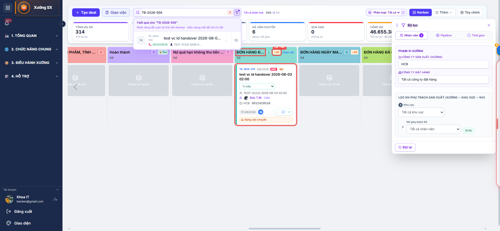
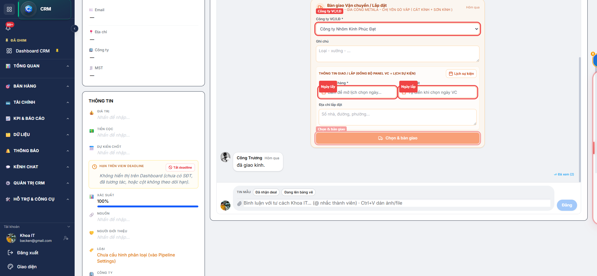
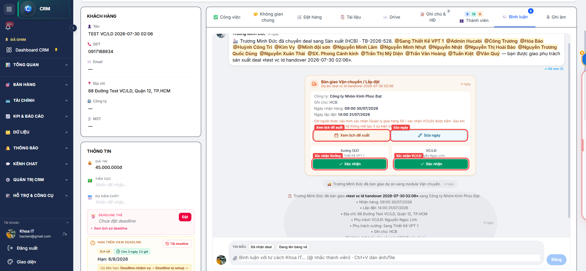
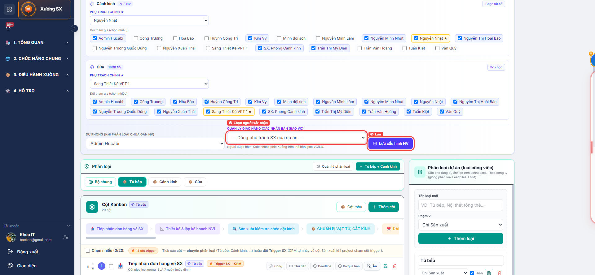
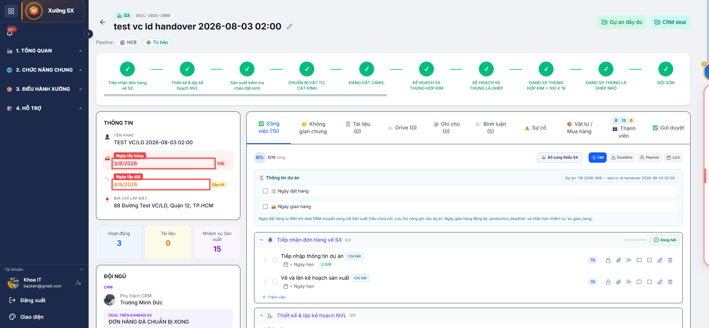
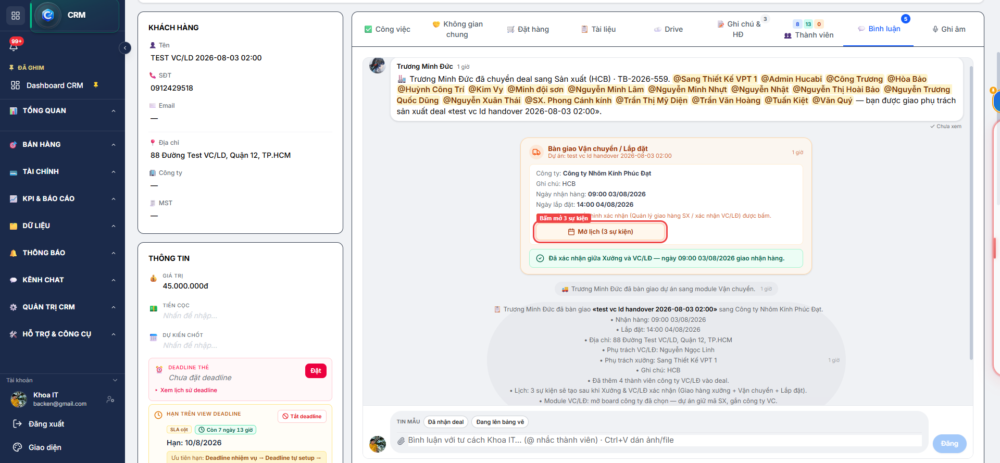

Hướng dẫn SX → VC/LĐ
Hướng dẫn quy trình
SX chuẩn bị giao hàng → hết VC/LĐ
TuBep Pro — Bàn giao sản xuất sang vận chuyển & lắp đặt
Ngày lập: 03/08/2026 · Module: Sản xuất (SX) · CRM · Vận chuyển/Lắp đặt (VC/LĐ)
1. Tổng quan luồng
SX kéo cột bàn giao
↓
Sale chọn công ty VC + ngày đề xuất
↓
Xưởng & VC/LĐ xác nhận lịch
↓
Tạo 3 sự kiện trên lịch
↓
VC nhận hàng → Lắp đặt → hoàn tất
Sản xuất (Xưởng)
Kéo thẻ vào cột bàn giao; Quản lý giao hàng bấm xác nhận lịch.
Sale CRM
Chọn công ty VC/LĐ + ngày lấy/lắp; chỉ người chịu trách nhiệm CRM được sửa ngày.
VC/LĐ
Người xác nhận bàn giao chốt lịch; đội VC nhận hàng & lắp đặt theo lịch.
Hệ thống
Thông báo các bên; chỉ tạo 3 sự kiện sau khi đủ 2 bên xác nhận.
2. Bước chi tiết
Bước 1
Sản xuất chuẩn bị giao hàng
- Mở module Sản xuất → Kanban công ty xưởng.
- Khi hàng sẵn sàng, kéo thẻ dự án sang cột có cờ Bàn giao VC
(ví dụ: «ĐƠN HÀNG ĐÃ CHUẨN BỊ XONG»).
- Hệ thống đăng thẻ bàn giao trên bình luận deal CRM và thông báo Sale CRM.
Chưa bàn giao thật sang module VC · Chưa tạo sự kiện lịch.

Hình 1 (ảnh thật Kanban SX). Khoanh đỏ: cột «ĐƠN HÀNG ĐÃ CHUẨN BỊ XONG» (cờ →VC) và thẻ dự án.
Bước 2
Sale CRM chọn công ty & ngày
- Mở deal CRM → tab Bình luận → thẻ bàn giao màu cam.
- Chọn công ty VC/LĐ, ngày lấy hàng, ngày lắp đặt (≥ ngày lấy), địa chỉ lắp.
- Có thể bấm mở lịch để xem lịch tạm (SX / VC / Lắp) trước khi chốt.
- Bấm Chọn & bàn giao.
Hệ thống sẽ:
- Đưa dự án vào module VC/LĐ của công ty đã chọn
- Lưu ngày đề xuất trên dự án (Ngày lấy hàng / Ngày lắp đặt)
- Thông báo Xưởng + VC/LĐ + Sale
- Chuyển thẻ sang trạng thái Chờ xác nhận
Vẫn chưa tạo 3 sự kiện thật trên lịch — tránh phải sửa lịch khi còn đổi giờ.

Hình 2 (ảnh thật CRM). Khoanh đỏ: công ty VC/LĐ, ngày lấy, ngày lắp, nút «Chọn & bàn giao».
Bước 2b
Sửa ngày đề xuất (nếu cần)
- Chỉ người chịu trách nhiệm CRM của deal (
assigned_to) thấy nút Sửa ngày.
- Sau khi sửa: reset xác nhận cũ, thông báo lại toàn bộ bên liên quan, đăng lịch sử trên deal.

Hình 3 (ảnh thật CRM). Khoanh đỏ: «Xem lịch đề xuất», «Sửa ngày», «Xác nhận» Xưởng / VC/LĐ.
Bước 3
Hai bên xác nhận lịch
| Bên |
Ai bấm xác nhận |
Cấu hình |
| Xưởng (SX) |
Quản lý giao hàng |
/sx/pipeline-settings → Cấu hình NV |
| VC/LĐ |
Người xác nhận bàn giao |
/vc/pipeline-settings → tab Bàn giao SX→VC |
- Mỗi bên bấm Xác nhận trên thẻ bàn giao.
- Bên còn lại nhận thông báo «chờ bạn xác nhận».
- Khi đủ 2 bên, hệ thống tạo 3 sự kiện:
| # | Sự kiện | Module | Thời điểm |
|---|
| 1 | Giao hàng xưởng | Sản xuất | Ngày lấy hàng |
| 2 | Vận chuyển / nhận hàng | VC/LĐ | Ngày lấy hàng |
| 3 | Lắp đặt | VC/LĐ | Ngày lắp đặt |

Hình 4 (ảnh thật /sx/pipeline-settings → Cấu hình NV). Khoanh đỏ: «Quản lý giao hàng (xác nhận bàn giao VC)».
Bước 4
Vận chuyển & lắp đặt đến hoàn tất
- Mở module VC/LĐ → board công ty đã chọn — dự án đã hiện trên Kanban.
- Panel Thông tin dự án: Ngày lấy hàng, Ngày lắp đặt.
- Đội VC theo lịch nhận hàng từ xưởng → vận chuyển tới công trình.
- Đội LĐ theo lịch lắp đặt → lắp, nghiệm thu.
- Kéo thẻ qua các cột pipeline VC/LĐ tới cột hoàn tất (theo cấu hình từng công ty).

Hình 5a (ảnh thật chi tiết dự án). Khoanh đỏ: «Ngày lấy hàng» và «Ngày lắp đặt».

Hình 5b (ảnh thật tab Bình luận). Khoanh đỏ: sau đủ 2 bên xác nhận — nút «Mở lịch (3 sự kiện)».
3. Cấu hình cần có trước
| Nơi | Thiết lập |
|---|
| Pipeline SX |
Cột có bật «Bàn giao VC» · Quản lý giao hàng (người xác nhận SX) |
| Pipeline VC |
Người phụ trách VC · Người lắp đặt · Người xác nhận bàn giao VC/LĐ |
| Deal CRM |
Có dự án SX liên kết · Người chịu trách nhiệm CRM (assigned_to) |
4. Lưu ý quan trọng
- Sự kiện lịch chỉ khóa sau khi đủ 2 bên xác nhận.
- Sale chỉ đề xuất ngày; Xưởng & VC mới chốt.
- Đổi ngày trước khi đủ xác nhận → thông báo lại + xác nhận lại từ đầu.
- Trên thẻ: «Xem lịch đề xuất» (xem tạm) · «Sửa ngày» (chỉ CRM phụ trách) · «Xác nhận» (đúng người cấu hình).